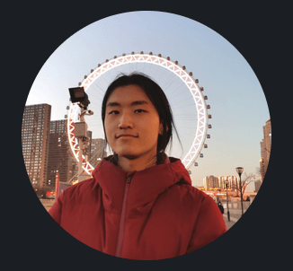

Personal Life
I was born in 2002 and is currently 21 years old.
Education
I am currently studying Computer Engineering at UC San Diego.
Will graduate soon and continue here as a Master's student
Hobbies
I really enjoy watching motorsport (F1, MotoGP, WRC) in my free time.
I just really like cars and driving them aronud.